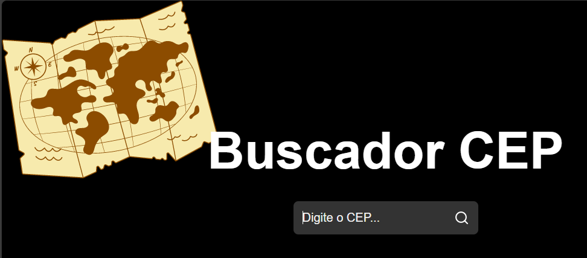
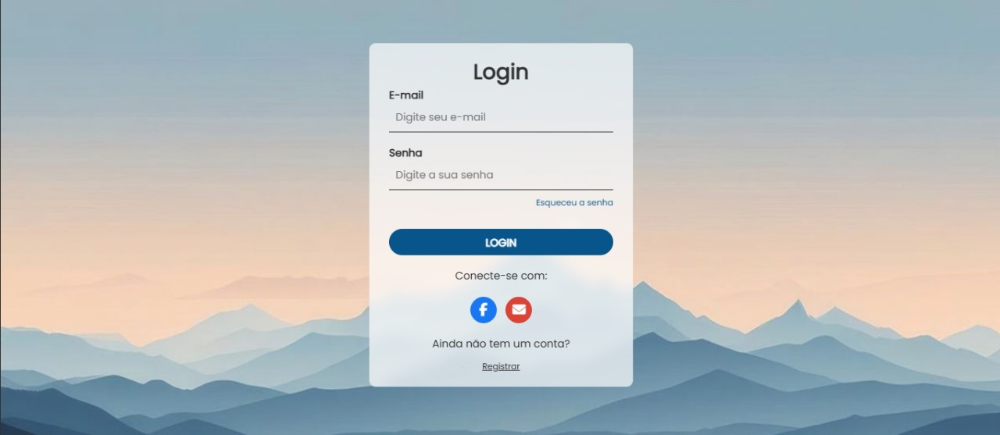
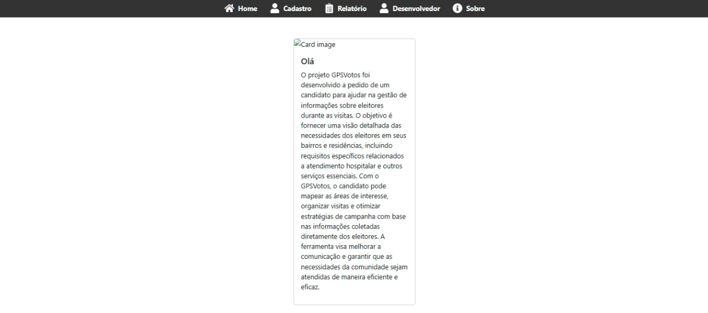

Testes manuais e exploratórios
Executo testes funcionais, de regressão e exploratórios, procurando tanto o que a especificação pede quanto o caminho que o usuário realmente faz.
Aberto a oportunidades em QA
Qualidade de software, análise de problemas e melhoria contínua.
Mais de 10 anos em TI, sempre perto do usuário e do sistema rodando de verdade. Hoje aplico essa bagagem testando, documentando e homologando software.
Trabalho com tecnologia há mais de 10 anos. Comecei no suporte técnico, atendendo cliente, implantando sistema, configurando ambiente e treinando usuário — e foi ali que aprendi como um software se comporta quando sai do ambiente controlado e vai para o dia a dia de quem usa.
Hoje direciono minha carreira para QA. Testo sistemas web e desktop, escrevo e executo cenários de teste, documento bugs, valido correções e participo da homologação de novas versões. Trabalho lado a lado com o time de desenvolvimento: reproduzo o erro, mostro o caminho, acompanho a correção e testo de novo.
Minha experiência de suporte virou um diferencial no QA. Conheço regra de negócio, sei de onde vêm os incidentes mais comuns e consigo enxergar o impacto real de um bug antes dele chegar no cliente. É esse olhar que trago para os testes: prático, analítico e focado em evitar retrabalho.
Trajetória em TI, do atendimento ao usuário à qualidade de software.
05/2017 — Atual
Adsoft Gestão Empresarial
Atuo com ERPs usados em varejo, supermercados, restaurantes, bares, autopeças, logística e informática, em processos de PDV, estoque, compras, financeiro, contas a pagar e receber e faturamento — incluindo emissão de documentos fiscais (NF-e, NFC-e, CT-e, MDF-e). Isso me ajuda a testar com contexto: sei o que o usuário espera do sistema e o que não pode falhar.
Ensino de tecnologia e formação de usuários
Ensinar me obrigou a explicar processo com clareza e a antecipar onde as pessoas erram — duas coisas que uso todo dia ao documentar um bug ou escrever um cenário de teste.
Funções administrativas, TI, arquivo, digitalização e suporte
Base de organização, rotina e atenção a detalhe, trabalhando com grandes volumes de informação.
O que eu faço na prática quando entro em um ciclo de testes.
Executo testes funcionais, de regressão e exploratórios, procurando tanto o que a especificação pede quanto o caminho que o usuário realmente faz.
Crio e executo cenários cobrindo fluxo principal, alternativo e de erro, escrevendo em BDD/Gherkin quando o time trabalha nesse formato.
Registro o defeito com passo a passo para reproduzir, resultado esperado, resultado obtido e evidência — o suficiente para o desenvolvedor não precisar adivinhar.
Reteste da correção, verificação de impacto em áreas relacionadas e homologação da versão antes de liberar para o cliente.
Trabalho com Robot Framework (web e mobile), Selenium WebDriver e Cypress para automatizar fluxos repetitivos e a bateria de regressão.
Testo APIs no Postman, validando status, payload e regras de resposta, e uso SQL para conferir os dados por trás da tela.
Projetos práticos de testes e automação, com código aberto no GitHub.
Projeto prático de automação de testes end-to-end sobre a aplicação Buger Eats, cobrindo o fluxo de cadastro e validações de formulário. Usei para consolidar estrutura de projeto de automação, organização de cenários e execução da suíte.
Projeto de estudo voltado a testes e automação, desenvolvido durante formação em QA. Serviu para praticar escrita de casos de teste, execução automatizada e leitura de resultados.
Projetos de estudo em front-end e back-end. Ajudam no QA: quanto mais eu entendo de código, melhor eu testo.

Busca de CEP feita em React durante meu treinamento, para praticar consumo de API e tratamento de resposta.

Tela de login responsiva em HTML e CSS, com foco em layout limpo e comportamento em telas pequenas.

Ferramenta para organizar visitas e registrar necessidades levantadas nas comunidades, usando as informações coletadas para orientar as próximas ações.
Aplicação de estudo com operações de depósito, saque e extrato, trabalhando regras e validações.
Páginas institucionais desenvolvidas com HTML, CSS e JavaScript, com atenção à responsividade.
Projetos menores em React e Node.js para entender melhor o funcionamento de front-end e back-end.
Ferramentas e práticas que uso no trabalho e nos estudos.
PRIME QA WEEK
Bee Lab Community
Estou aberto a oportunidades em QA. Me chame para conversar sobre uma vaga, um projeto ou uma dúvida técnica.